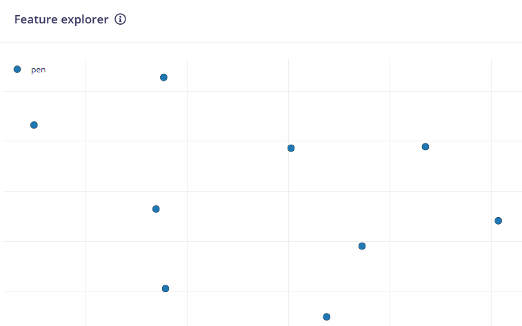
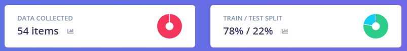
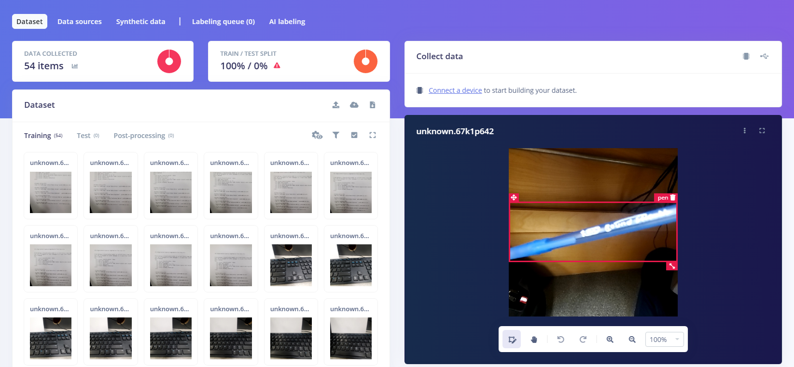
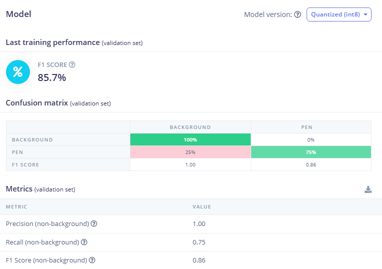
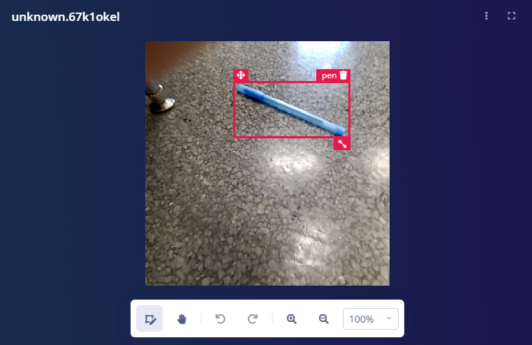

t1a14-AI-edgeimpulse-nolan.html
Tried making a classification model on >
Your job if assigned for other webpages is to make other models with your cell phone or a computer with a webcam.
- Visual Classification - Done
- Wake word (sound)
- Motion (Movement x, y, z)
- Visual Object Detection FOMO (faster objects more objects)
- Visual Regression
- Visual Anomaly Detection
Data Entry

Data Totals

Data Explorer

Confusion Matrix

Unknown Correct

Pen Correct